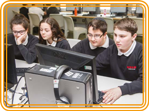

Assessment
Formative assessment
There are several challenges to assessing computing.
- Work delivered through projects can be openended, with pupils achieving very different but relevant outcomes.
- If pupils work collaboratively, how do you assess an individual’s contribution?
Despite these challenges, it is possible to use assessment for learning (AfL) techniques that you’re familiar with from other subjects to assess computing. 
Self-assessment
Effective digital creators are independent learners. Part of the process of becoming an independent learner is being able to assess your own progress and evaluate your work. Self-assessment goes hand in hand with pupils setting their own goals. Reporting self-assessment can take the form of a learning journal, blog or screencast. 
Peer assessment
Building on the idea of constructionism and making digital artefacts for other people, peer assessment provides discussion and feedback, helping the creator and assessor to understand what a finished product would look like, and how to improve it. Peer assessment can happen in the classroom but it also takes place online, through communities such as YouTube and Scratch. Pair programming and code reviews are industry techniques that can be used in the classroom.
Target setting
Setting challenging targets can help pupils recognise areas for development, an important step in becoming an independent learner. Make sure that targets are realistic, manageable and fully evaluated.
Open questioning
The theory elements of computing run the risk of being taught in a ‘tell and recall’ way, with pupils being passive receivers of information. Open questioning (“Why?” and “How?”) allows pupils to understand the implications of theory. Programming and IT project tasks can be assessed by asking questions such as, “Why did you choose to do it this way and not another?” and “Can you explain how this works?”. For more information, see the assessment guidance from Naace. www.naace.co.uk/curriculum/assessment.
KWL
Asking pupils to state what they already know, what they want to learn and what they have learned provides a perfect platform for pupil selfassessment and target setting. It can also inform your future lesson planning.
Technology-enhanced learning
Using technology-enhanced learning can be particularly effective in AfL. Here are a couple of examples.
Blogs and online communities: by publishing work in open or school-specific communities, pupils can share practice, create work for an audience and peer assess. Most virtual learning environments will have the ability to implement this within your school, and online communities such as YouTube and Scratch allow for wider audiences. Assessing work through blogs and online communities also links well with several of the key points around digital literacy. Pupils should think carefully about allowing completely open comments on their work – they need to be resilient if adverse comments are received and your role may be to support them. 
Machine assessment: platforms exist to teach and automatically assess some aspects of computing. For example, OCR has built a computing MOOC for their GCSE: see www.cambridgegcsecomputing. org/. Commercial websites and virtual learning environments may provide tools to create selfmarking tests.
